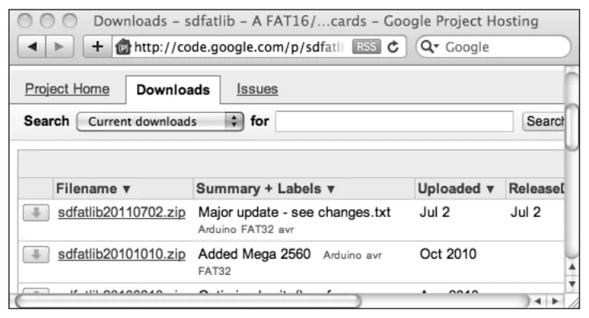
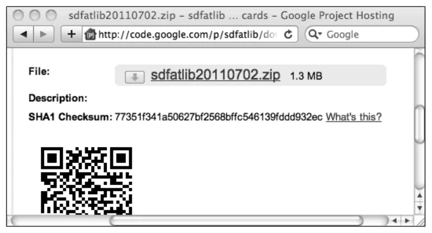
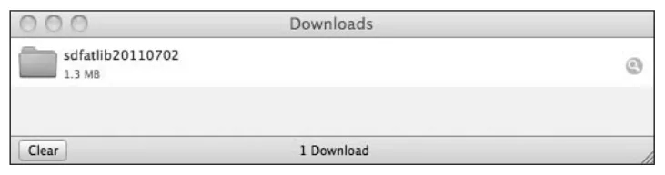
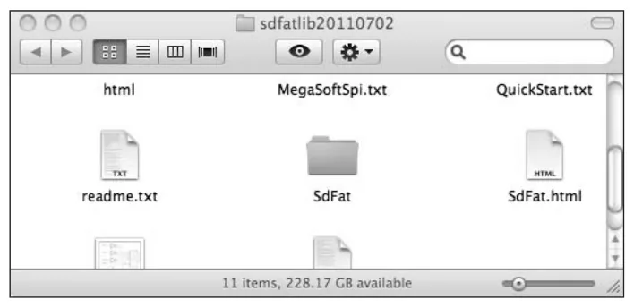
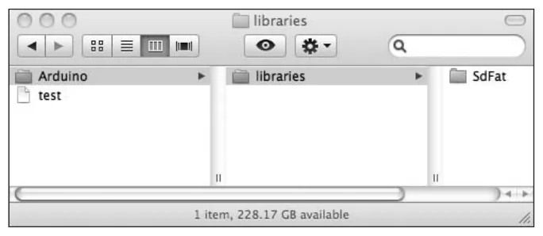
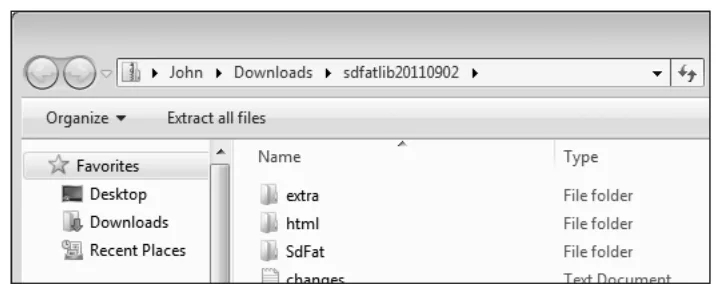
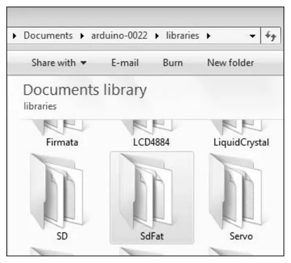
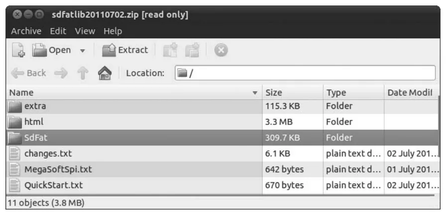
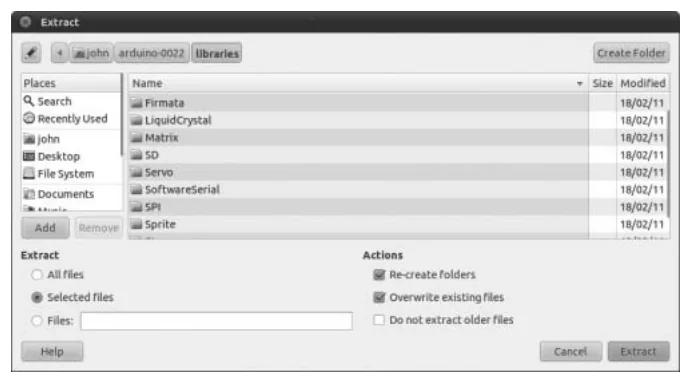

Just as an Arduino shield can expand our hardware, a library can add useful functions for particular tasks that we can add to our sketches or add extra functions that allow the use of various hardware specific to a manufacturer. Anyone can create a library, just as suppliers of various Arduino shields often write their own libraries to match their hardware.
The Arduino IDE already includes a set of preinstalled libraries. To include them in your sketches, choose Sketch4Import Library, and you should see the collection of preinstalled libraries with names such as Ethernet, LiquidCrystal, Servo, and so on. Many of these names will be self-explanatory. (If a library is required in your project work, it will be explained in detail.)
Importing a Shield’s Libraries
If you buy a shield, you’ll generally need to download and install its libraries from the shield vendor’s site or from a link provided.
To demonstrate how this is done, let’s download the library required by the microSD card shield shown in Figure 8-3.
- Download the latest file from http://code.google.com/p/sdfatlib/downloads/ list/. Figure 8-14 shows this web page.

- Click the latest version of the library in the list of filenames at the left, which should launch the download page (Figure 8-15).

- Click the filename ending with .zip, and the file should start to down-load. Once you’ve downloaded the library, use the directions that follow to install it on your operating system.
Installing the Library on Mac OS X
If you’re downloading to the Mac OS X system, follow these directions:
- Open the Downloads folder on your Mac and find the downloaded .zip file, as shown in Figure 8-16.

- Double-click the downloaded file’s folder to reveal its contents, and then locate the SdFat folder, as shown in Figure 8-17.

- Copy the SdFat folder from the window shown in Figure 8-17 to your Arduino/libraries folder, as shown in Figure 8-18.

- Make sure that the SdFat library has been installed and is available by restarting the IDE software and selecting Sketch4Import Library. SdFat should show up in the list. (If it does not, try the installation procedure again.)
With your library installed, skip forward to “MicroSD Memory Cards” on page 173.
Installing the Library on Windows XP and Later
If you’re downloading to a Windows XP or later system, follow these directions:
- After the download has completed, open the downloaded file folder to reveal its contents, and then locate the SdFat folder, as shown in Figure 8-19.

- Copy the SdFat folder from the window shown in Figure 8-19 to your Arduino/libraries folder, as shown in Figure 8-20.

- Make sure that the SdFat library has been installed and is available by restarting the IDE and selecting Sketch4Import Library. SdFat should appear in the list. (If it does not, try the installation procedure again from the beginning.)
With your library installed, skip forward to “MicroSD Memory Cards” on page 173.
Installing the Library on Ubuntu Linux 11.04 and Later
If you’re downloading to a system running Ubuntu Linux 11.04 or later, follow these directions:
- Locate the downloaded file and double-click it. The Archive Manager window should appear with the SdFat folder, as shown in Figure 8-21.

- Right-click the SdFat folder in the window shown in Figure 8-21, and then click Extract to extract it to your /libraries folder (Figure 8-22).

- Make sure that the SdFat library has been installed and is available by restarting the IDE and selecting Sketch4Import Library. SdFat should appear in the list. (If it does not, try the installation procedure again from the beginning.)
With your library installed, move on to the next section.